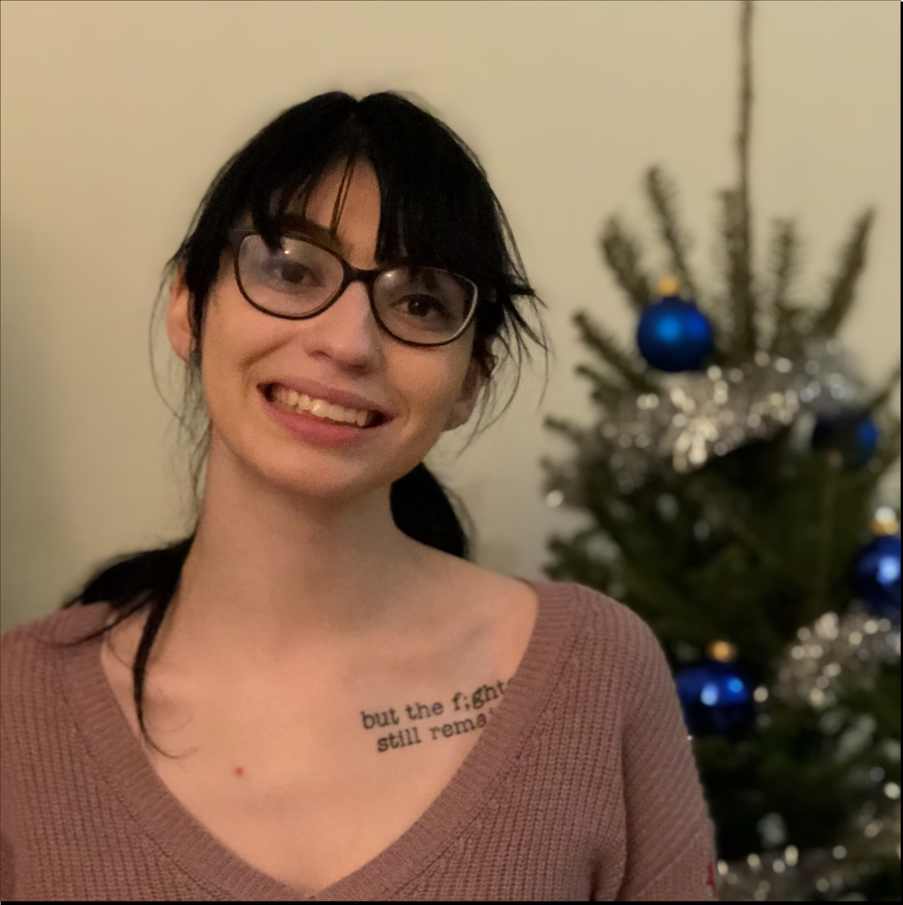
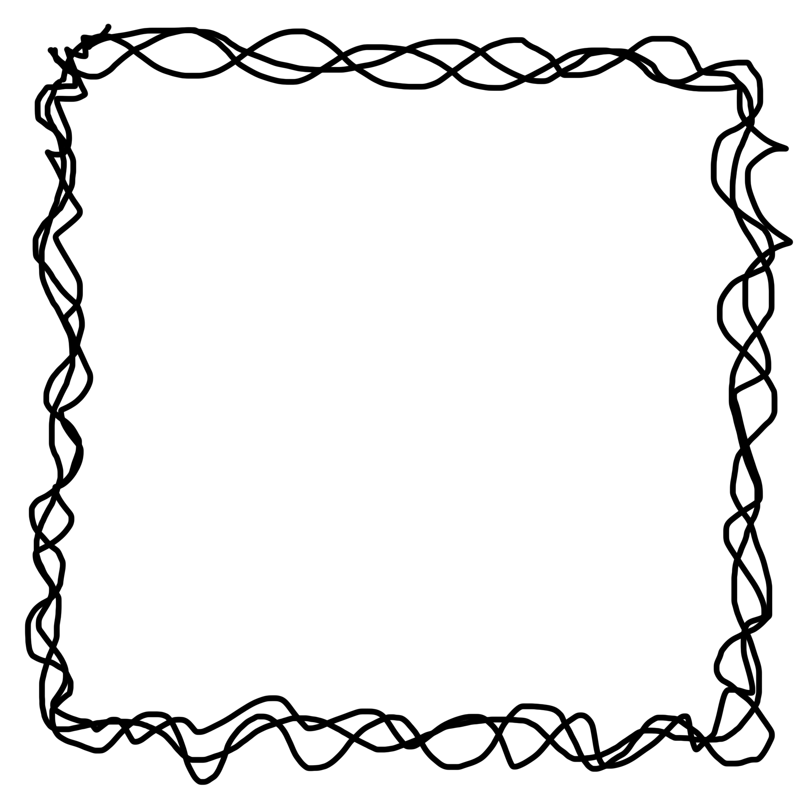
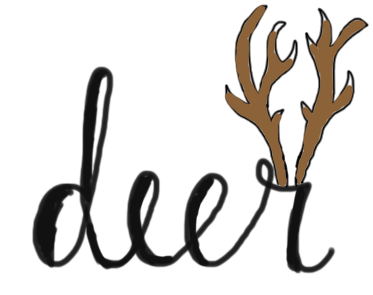

Our Mission
We are an independent, animal-themed macOS and iOS development team from the Cincinnati, Ohio area. Our apps include OwlList, FoxTimer, and CardinalNumbers, which aim to help with productivity in a cute and simple way.
About Us



Sage Conger is the web developer and the designer of the team's apps. She is a senior in college and the proud girlfriend of Dan Turner!
Dan Turner is the developer of the team's apps. He has years of experience in iOS application consulting, and has a focus on programming visual components within apps.